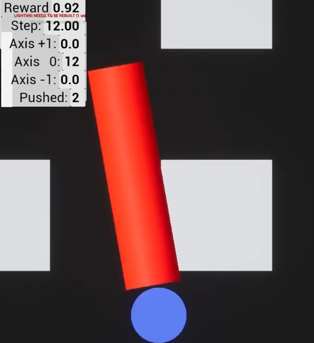

GKML
UE5 plugin providing tools for machine learning. This plugin documents how to use the MLAdapter plugin for machine learning by reimplementing the Cartpole environment.
Requirements
UE4 - 5.0+
Note
For UE5 on linux you will need to disable 2 plugins (XGEController and FastBuildController as of Jan 2022)
Packaged Install
Unfortunately U4ML python package is not open source and you will need to create an Epic account to install it on your machine. Once it is install you can run any packaged environment without installing or compiling UnrealEngine.
# Install MLAdapter python package
python -e UnrealEngine/Engine/Plugins/AI/MLAdapter/Source/python
# Download the GKML environment
wget
pip install cartpole-0.0.0-py3-none-any.whl
# run the packaged environment for training
cartpole-train --launch
Development Install
Note
This repo started using UE5 after commit 332ae357235995d1184effdb060
Install the python package to run this example as a gym environment
git submodule add https://github.com/Delaunay/GKMachineLearning Plugins/GKML
pip install -e Plugins/GKML
# Install MLAdapter python package
python -e UnrealEngine/Engine/Plugins/AI/MLAdapter/Source/python
# this will compile the project
UnrealEditor MyProject.uproject
# Click play in the editor to start the game
# this will connect to the game running inside the editor
cartpole-train --no-launch
To run the example just launch the appropriate script
python Source/python/cartpole/run.py --project E:/cartpole/Cartpole.uproject --exec E:/UnrealEngine/Engine/Binaries/Win64/UE4Editor.exe
Making of Cartpole
Developer